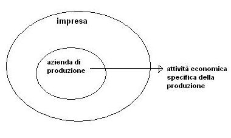
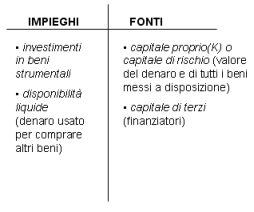

Torna alla pagina di Economia ed Organizzazione Aziendale
:: Economia ed Organizzazione Aziendale ::
Lezione 03/03/2008
⇒ la loro combinazione porta all'ASSETTO ISTITUZIONALE
Ora li analizziamo nel dettaglio:
Ad esempio alla FIAT vengono svolte varie attività oltre alla produzione di automobili

(produzione di automobili al di fuori delle altre attività)
soddisfare i bisogni.
garantire la remunerazione(pagare un compenso pattuito) dei fattori produttivi, cioè di quelle risorse che vengono utilizzate nel processo di produzione di beni/servizi (OUTPUT).
I fattori produttivi vengono sintetizzati in: capitale(K) e lavoro(L), la loro combinazione porta alla produzione dell'OUTPUT.
K remunerato con:
L remunerato con:
- COSTI + RICAVI = (+)UTILE oppure (-)PERDITA
dove i costi consistono in:
mentre i ricavi consistono in:
è lo strumento con cui raggiungiamo il fine ed è rappresentato dal processo produttivo, cioè dalla combinazione dei fattori produttivi(K,L), che porta alla realizzazione del prodotto(Y)
⇒ Y=f(K,L)
cioè avere del denaro in cambio del K che ho messo a disposizione e del L che ho dato.
Possono essere:
⇓
ASSETTO ISTITUZIONALE
Il denaro può essere messo a disposizione da due tipi di capitali(colonna fonti):

Questi due tipi di capitali hanno le seguenti differenze:
Nota:In questo caso ci si riferisce solo al denaro, infatti le fonti interne possono darci denaro oppure beni(che sono a disposizione della nostra impresa).
si intendono tutte le attività economiche riconducibili a:
l'oggetto è sempre la contabilità:
5 AREE DI GESTIONE
Sono teoriche, non individuabili nella realtà.
ad ex in un impresa manifatturiera:
Costi:
Ricavi:
operazioni con le quali ci si procura le risorse finanziarie per acquistare K(fattori produttivi) e L(servizi del lavoro)
impiego di risorse finanziarie(parte da quelle che abbiamo e le impiega) per acquistare:
E' secondaria
consiste nei contratti assicurativi contro furti, incendi, infortuni, ecc...(sono rischi specifici. Non puoi assicurarti contro il rischio d'impresa)
bilancio: dichiarazione dei redditi per pagare le imposte.
⇒ ogni azienda è unica nello spazio e nel tempo(le fasi sono tutte insieme).